.
How to Play Chess Rules and Basics
It's never too late to learn how to play chess - the most popular game in the world! Learning the rules of chess is easy:
Step 1. How to Setup the Chessboard
At the beginning of the game the chessboard is laid out so that each player has the white (or light) color square in the bottom right-hand side. The chess pieces are then arranged the same way each time. The second row (or rank) is filled with pawns. The rooksgo in the corners, then the knights next to them, followed by the bishops, and finally the queen, who always goes on her own matching color (white queen on white, black queen on black), and the king on the remaining square.
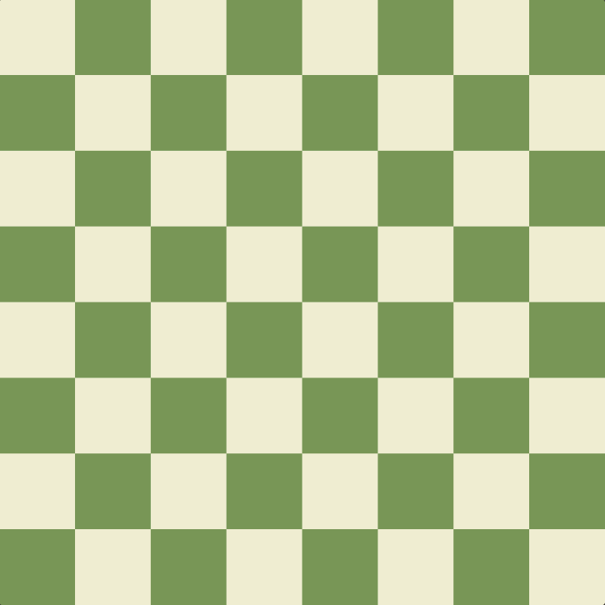
Step 2. How the Chess Pieces Move
Each of the 6 different kinds of pieces moves differently. Pieces cannot move through other pieces (though the knight can jump over other pieces), and can never move onto a square with one of their own pieces. However, they can be moved to take the place of an opponent's piece which is then captured. Pieces are generally moved into positions where they can capture other pieces (by landing on their square and then replacing them), defend their own pieces in case of capture, or control important squares in the game.
How to Move the King in Chess
The king is the most important piece, but is one of the weakest. The king can only move one square in any direction - up, down, to the sides, and diagonally. The king may never move himself into check (where he could be captured). When the king is attacked by another piece this is called "check".
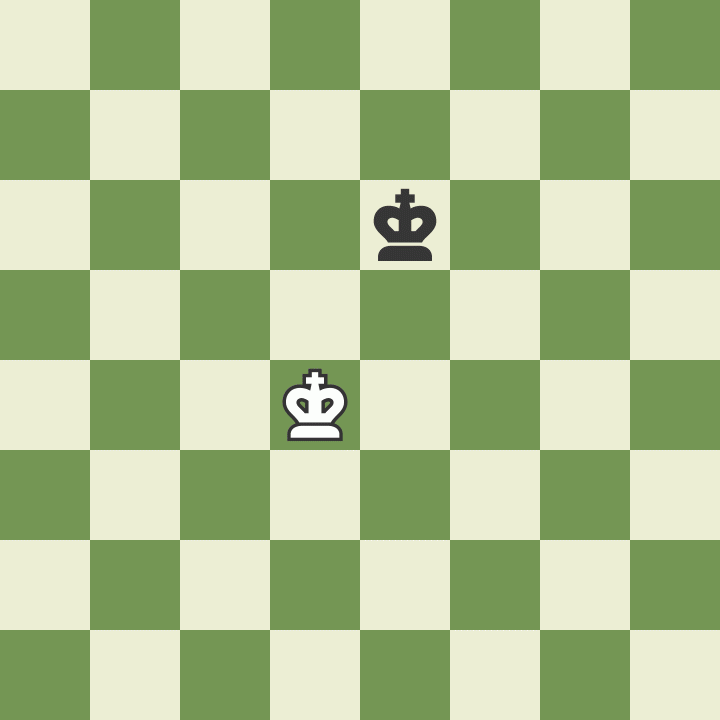How to Move the Queen in Chess
The queen is the most powerful piece. She can move in any one straight direction - forward, backward, sideways, or diagonally - as far as possible as long as she does not move through any of her own pieces. And, like with all pieces, if the queen captures an opponent's piece her move is over. Notice how the white queen captures the black queen and then the black king is forced to move.
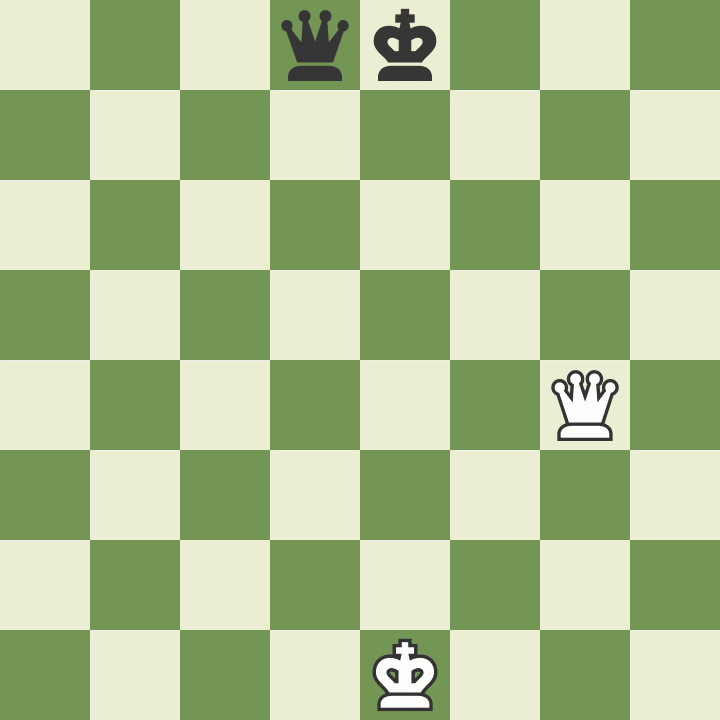
How to Move the Rook in Chess
The rook may move as far as it wants, but only forward, backward, and to the sides. The rooks are particularly powerful pieces when they are protecting each other and working together!
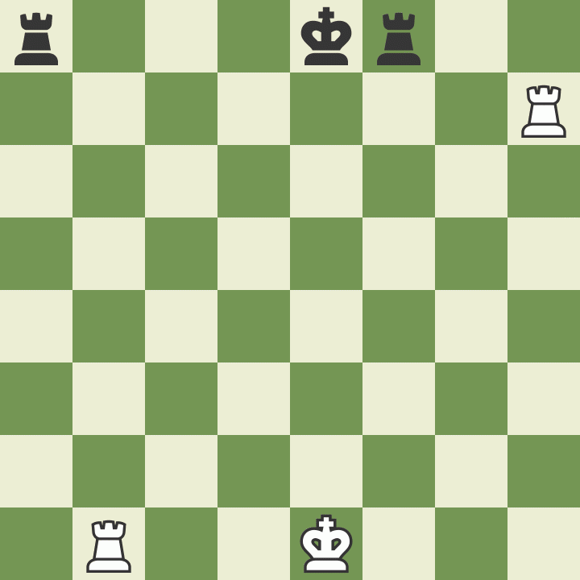
How to Move the Bishop in Chess
The bishop may move as far as it wants, but only diagonally. Each bishop starts on one color (light or dark) and must always stay on that color. Bishops work well together because they cover up each other's weaknesses.
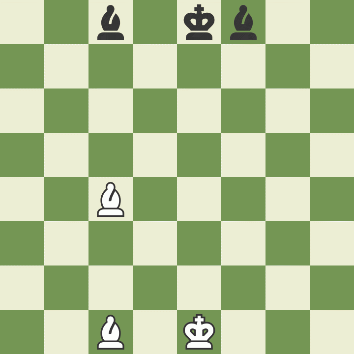How to Move the Knight in Chess
Knights move in a very different way from the other pieces – going two squares in one direction, and then one more move at a 90 degree angle, just like the shape of an “L”. Knights are also the only pieces that can move over other pieces.
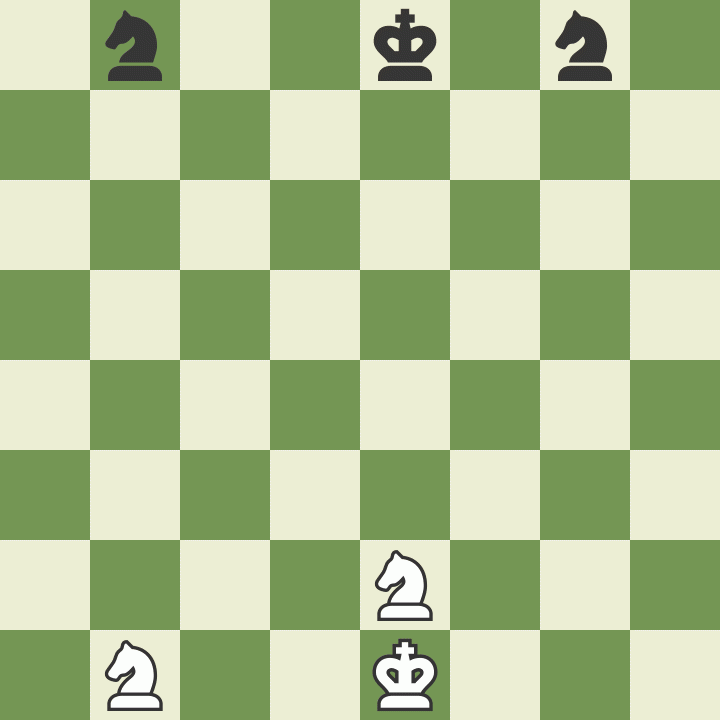How to Move the Pawn in Chess
Pawns are unusual because they move and capture in different ways: they move forward, but capture diagonally. Pawns can only move forward one square at a time, except for their very first move where they can move forward two squares. Pawns can only capture one square diagonally in front of them. They can never move or capture backwards. If there is another piece directly in front of a pawn he cannot move past or capture that piece.
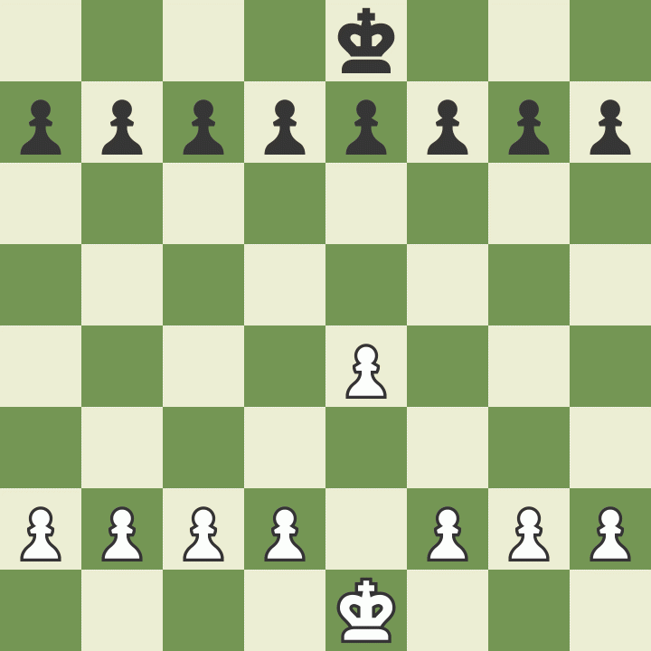Step 3. Discover the Special Rules of Chess
There are a few special rules in chess that may not seem logical at first. They were created to make the game more fun and interesting.
How to Promote a Pawn in Chess
Pawns have another special ability and that is that if a pawn reaches the other side of the board it can become any other chess piece (called promotion). A pawn may be promoted to any piece. A common misconception is that pawns may only be exchanged for a piece that has been captured. That is NOT true. A pawn is usually promoted to a queen. Only pawns may be promoted.
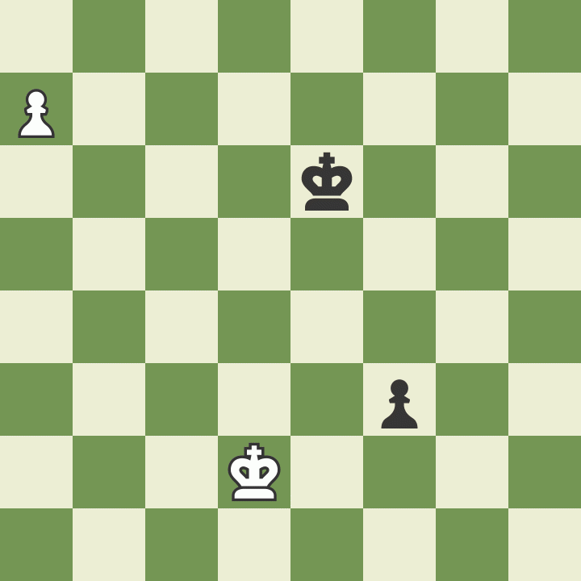
How to do "en passant" in Chess
The last rule about pawns is called “en passant,” which is French for “in passing”. If a pawn moves out two squares on its first move, and by doing so lands to the side of an opponent's pawn (effectively jumping past the other pawn's ability to capture it), that other pawn has the option of capturing the first pawn as it passes by. This special move must be done immediately after the first pawn has moved past, otherwise the option to capture it is no longer available. Click through the example below to better understand this odd, but important rule.
.webp)
How to Castle in Chess
One other special chess rule is called castling. This move allows you to do two important things all in one move: get your king to safety (hopefully), and get your rook out of the corner and into the game. On a player's turn he may move his king two squares over to one side and then move the rook from that side's corner to right next to the king on the opposite side. (See the example below.) However, in order to castle, the following conditions must be met:
- it must be that king's very first move
- it must be that rook's very first move
- there cannot be any pieces between the king and rook to move
- the king may not be in check or pass through check
Notice that when you castle one direction the king is closer to the side of the board. That is called castling "kingside". Castling to the other side, through where the queen sat, is called castling "queenside". Regardless of which side, the king always moves only two squares when castling.
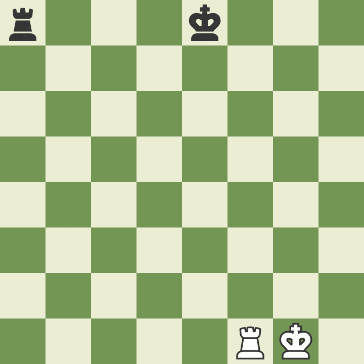
Step 4. Find out Who Makes the First Move in Chess
The player with the white pieces always moves first. Therefore, players generally decide who will get to be white by chance or luck such as flipping a coin or having one player guess the color of the hidden pawn in the other player's hand. White then makes a move, followed by black, then white again, then black and so on until the end of the game. Being able to move first is a tiny advantage which gives the white player an opportunity to attack right away.
Step 5. Review the Rules of How to Win a Game of Chess
There are two ways to end a game of chess: by checkmate, or with a draw.
How to Checkmate in Chess
The purpose of the game is to checkmate the opponent's king. This happens when the king is put into check and cannot get out of check. There are only three ways a king can get out of check: move out of the way (though he cannot castle!), block the check with another piece, or capture the piece threatening the king. If a king cannot escape checkmate then the game is over. Customarily the king is not captured or removed from the board, the game is simply declared over.
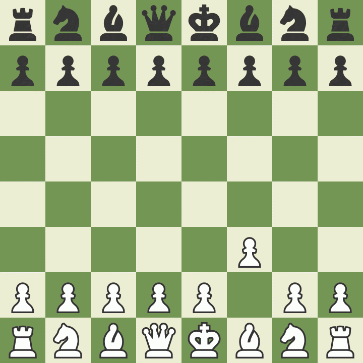
How to Draw a Chess Game
Occasionally chess games do not end with a winner, but with a draw. There are 5 reasons why a chess game may end in a draw:
- The position reaches a stalemate where it is one player's turn to move, but his king is NOT in check and yet he does not have another legal move
- The players may simply agree to a draw and stop playing
- There are not enough pieces on the board to force a checkmate (example: a king and a bishop vs.a king)
- A player declares a draw if the same exact position is repeated three times (though not necessarily three times in a row)
- Fifty consecutive moves have been played where neither player has moved a pawn or captured a piece
Step 6. Study Basic Chess Strategies
There are four simple things that every chess player should know:
Protect your King
Get your king to the corner of the board where he is usually safer. Don't put off castling. You should usually castle as quickly as possible. Remember, it doesn't matter how close you are to checkmating your opponent if your own king is checkmated first!
Don't Give Pieces Away
Don't carelessly lose your pieces! Each piece is valuable and you can't win a game without pieces to checkmate. There is an easy system that most players use to keep track of the relative value of each chess piece.
How much are the chess pieces worth?
- A pawn is worth 1
- A knight is worth 3
- A bishop is worth 3
- A rook is worth 5
- A queen is worth 9
- The king is infinitely valuable
At the end of the game these points don't mean anything – it is simply a system you can use to make decisions while playing, helping you know when to capture, exchange, or make other moves.
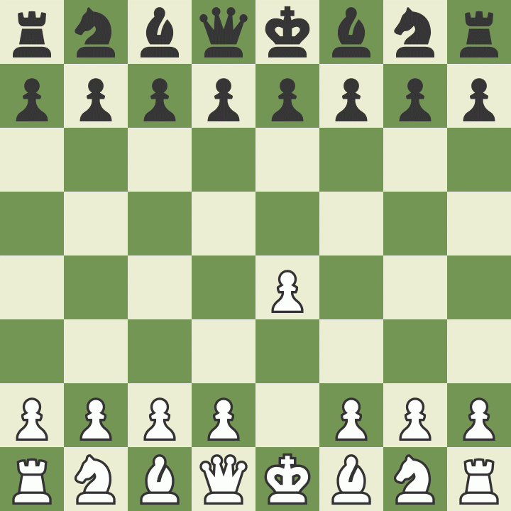
Control the Center of the Chessboard
You should try and control the center of the board with your pieces and pawns. If you control the center, you will have more room to move your pieces and will make it harder for your opponent to find good squares for his pieces. In the example above white makes good moves to control the center while black plays bad moves.
Use All of your Chess Pieces
In the example above white got all of his pieces in the game! Your pieces don't do any good when they are sitting back on the first row. Try and develop all of your pieces so that you have more to use when you attack the king. Using one or two pieces to attack will not work against any decent opponent.
Step 7. Practice by Playing Lots of Games
The most important thing you can do to get better at chess is to play lots of chess! It doesn't matter if you play at home with friends or family, or play online, you have to play the game a lot to improve. These days it's easy to find a game of chess online